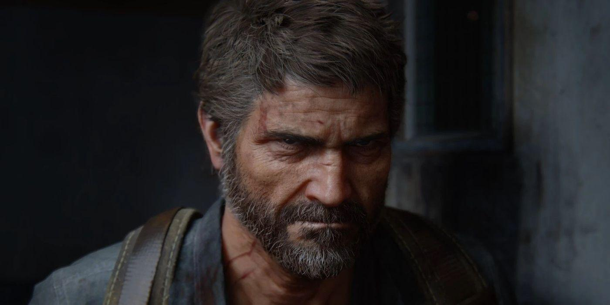

Contrabandista · Texas
Joel
Um sobrevivente endurecido, marcado pela morte da filha no primeiro dia do surto. Duas décadas depois, aceita escoltar Ellie e, aos poucos, volta a ter alguém por quem lutar. Sua decisão no hospital de Salt Lake City define toda a franquia.
- Nos jogos
- Troy Baker
- Na série
- Pedro Pascal